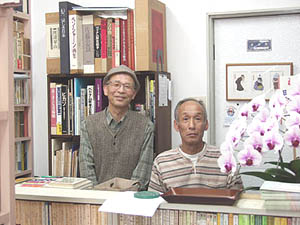

古書 片岡
神戸市兵庫区神田町 五宮バス停前 電話・FAX 078-361-8766
（ＪＲ三ノ宮駅前7番バスのりば「神戸駅行き」乗車、五宮バス停下車）

2009年5月1日オープン
営業日：木曜・金曜を除く週5日
営業時間：13時〜18時
取扱分野
労働運動・社会主義運動・社会経済思想、その他それらに関連する事件・闘争を描いたノンフィクション作品、人物評伝・
画文集・写真集・随筆・小説など約5000冊収蔵。 兵庫県古書籍商業協同組合加入。
電話・FAXによる注文も可。
店主より一言
店舗に出す戴いた本や蔵書を整理していたら、蔵書印あり、線引きあり、箱やカバーを捨てられた本あり。
それぞれに持ち主との歴史や運命を歩んできたのだろう。「本は自らの運命を歩む」とのことわざを思い出した。次は
どんな人と巡り合うのか。（片岡）
BACK
|